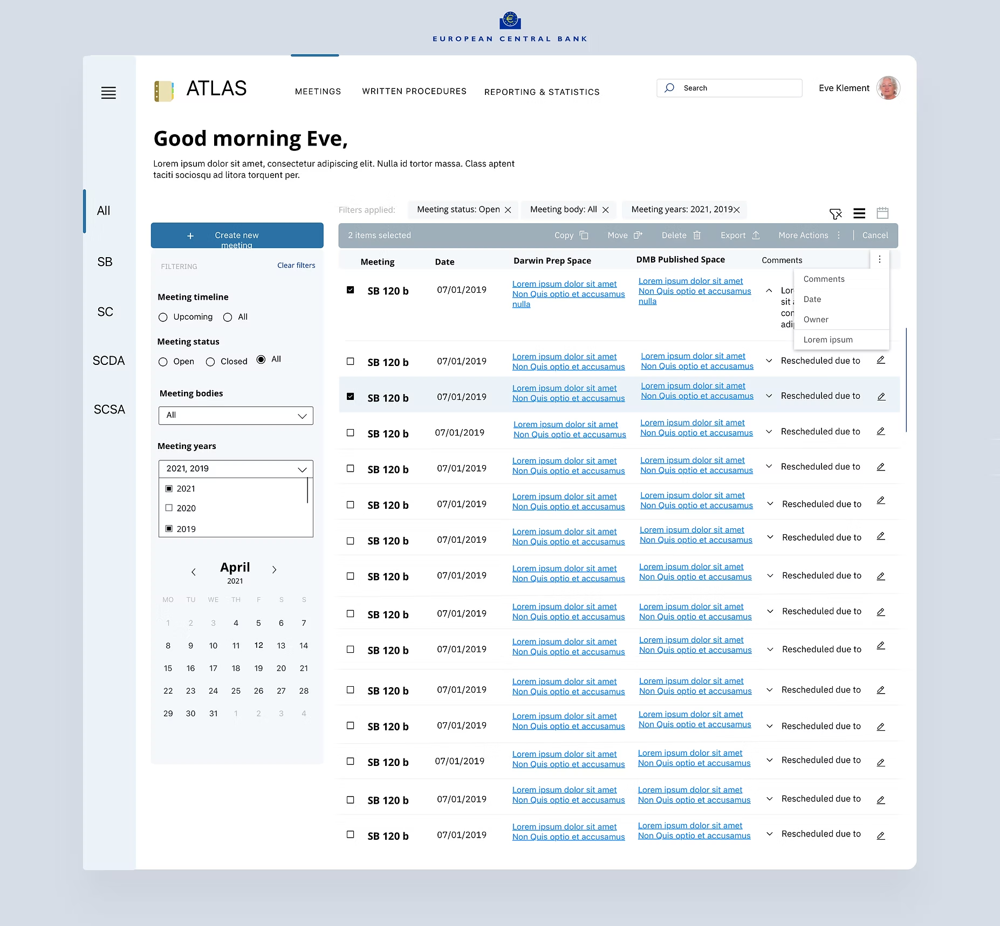
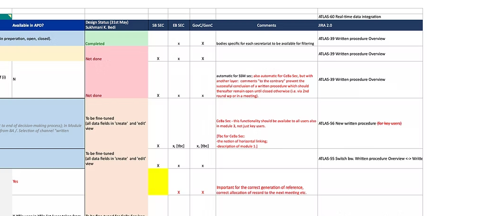
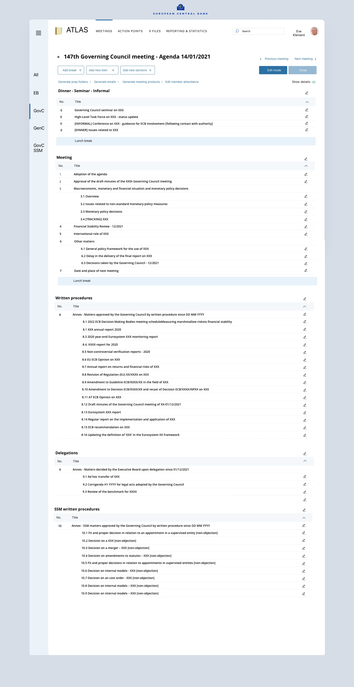

ECB Atlas
Atlas is the European Central Bank's internal platform for digitalizing the decision-making processes of ECB secretariats, including the Supervisory Board and the Governing Council — built to enhance the efficiency and transparency of internal workflows as part of the ECB's broader digital transformation.

Project overview
Atlas is used daily by ECB officials to manage procedures, plan meetings, and formulate policy. The redesign's primary objective was to enhance the user experience by rebuilding the interface on up-to-date technology — making a genuinely intuitive, efficient workflow for people managing high-stakes governance processes, not just a visual refresh.
Objectives
- Enhance user experience: a more intuitive, user-friendly interface aligned with ECB officials' daily workflows.
- Improve efficiency: streamline processes to reduce the time and effort spent managing procedures and meetings.
- Ensure technological relevance: update the platform's technology stack to meet current standards and future scalability.
Discovery
The initial phase centered on understanding user stories provided directly by clients — narratives that surfaced the daily challenges ECB officials actually faced. One secretariat official, for instance, described needing a clear overview of every XFile they coordinate, with up-to-date information readily available rather than scattered across tools.
To structure that discovery work:
- Documentation: user stories were logged in an Excel sheet, detailing required data fields, features, and functionality.
- Validation: co-design sessions validated my understanding and surfaced additional insight.
- Analysis: the existing Atlas platform was analyzed directly to identify pain points and areas for improvement.
Design strategy
Turning those objectives into a working platform meant running a multifaceted approach as UX Lead — anchored in four pillars.
1. User-Centered Research and Co-Design
In-depth user research explored the diverse needs of ECB officials relying on Atlas to manage procedures and meetings. Co-design sessions with stakeholders, including secretariat officials, surfaced real workflows and pain points — grounding the redesign in actual user experience rather than assumption.
2. Iterative Design and Rapid Prototyping
Wireframes and interactive prototypes, built from research insight, were shared with stakeholders through InVision — enabling rapid feedback and quick iteration. Regular playbacks with business and development teams kept everyone aligned and surfaced emerging challenges early, before they became expensive to fix.
3. Comprehensive Documentation and Developer Collaboration
Detailed design specification documents outlined design rationale, user interactions, and technical requirements — a reference for developers and a review point for stakeholders to validate that every requirement had been accurately captured. Close collaboration with development teams, including IBM's, ensured the final build faithfully reflected the design intent.
4. Continuous Improvement and Future-Proofing
Recognizing that user needs and technology both keep moving, I built in mechanisms for ongoing feedback and iterative improvement — keeping Atlas responsive to ECB's evolving operational landscape rather than static the moment it shipped.
Implementation
The homepage was the key focal point of the transformation — it's the user's gateway into the system, used daily by secretariat staff, meeting coordinators, and data managers handling a genuinely high volume of information. I prioritized clarity, control, and customization to enable efficiency at scale.
1. Personalization and Contextual Entry Point
The design opens with a warm, contextual greeting ("Good morning, Eve") — humanizing the interface while confirming user identity, and quietly framing the system as responsive and personal rather than institutional and cold. Frequently used filters (Meeting Status, Meeting Body, Year) sit just below the welcome message for frictionless access to relevant data, letting users jump straight into their specific workflow instead of navigating through menu layers.
2. Navigation and Table-Centric Information Architecture
Two responsive navigation states were offered: an expanded left navigation with clearly labeled categories — Supervisory Board (SB), SC, SCDA, and others — for immediate visibility into organizational divisions, and a collapsed navigation that saves screen real estate for data-dense work while tooltips keep icon-only access usable. On narrow viewports, that same navigation collapses further into a full-screen drawer rather than disappearing into an unreachable menu.
Around that navigation sits a dynamic data table — the essential feature for ECB's procedural and meeting management needs:
- Column flexibility: users can scan meetings by status, date, location, editing history, and comments, or switch to a different column set entirely depending on what they need to track.
- Inline editing: fields can be updated directly in the table, without navigating away from the main view.
- Selectable rows with bulk actions: power users can export, delete, or copy across multiple entries at once — a real efficiency gain for administrative work.
This wasn't a new coat of paint — it's a deeply informed, user-validated design solving real workflow challenges, delivered through careful planning, co-design sessions, and agile prototyping.
Written Procedures
Written procedures are a critical part of ECB's formal decision-making process — structured, documented workflows spanning initiation, review, feedback, approval, and archival. The challenge was real complexity: multiple stakeholders, status stages, and document exchanges previously managed through email or offline tools with no single source of truth.
I centralized this into a streamlined, auditable, intuitive experience — designed with the same user empathy applied to the homepage, so procedural integrity could actually be tracked, operational metrics measured, and departments could collaborate without losing the thread. The module scales from a simple list to a fully branching decision record: every written procedure can carry its own conditional fields, link out to related meetings, and trace its full lineage back through the board that raised it.
Meeting Creation
Setting up a meeting was previously a manual, calendar-juggling exercise handled outside the system. The redesign brings scheduling directly into Atlas: a coordinator sees existing meetings for a body laid out across a full year at a glance, picks dates inline, and configures recurrence or multi-day sessions without leaving the form — including a bulk path for loading an existing schedule from Excel rather than re-entering it by hand.
Agenda Management
The agenda is where the actual governance work happens — items grouped into sections (meeting business, written procedures, delegations), each with its own numbering, timing, and status. Coordinators can drag items to reorder them, set discussion order and duration with start/end times recalculated automatically, add a new item mid-flight, and pull attendees straight from the ECB phonebook when managing each body's attendance and substitutions. Drilling into a single item opens its own record — outcome notes, its linked members and attendees, and direct links out to that item's prep and public Darwin space folders — so nothing about it lives outside Atlas.
Conclusion
The Atlas redesign succeeded through close collaboration, a genuinely user-centered approach, and clear communication with business stakeholders. Facilitating design sessions directly with the business established a continuous feedback loop that let me iteratively improve the experience while delivering something both functional and intuitive.
Working under Alberto Valentin Cococi's guidance gave me valuable feedback that refined my design process, and the support to introduce new tools and design artifacts that streamlined how I communicated ideas with stakeholders.
One of the harder challenges was complexity introduced by multiple secretariats, each with unique requirements and data fields — fragmentation that made it difficult to track which features applied to which secretariat, with real risk of misalignment and feature gaps. Drawing on my experience as the "Voice of the User" on the PowerVC project, I introduced a structured feedback tracking process: a shared tracker mapping every data field to its design status and comments across each secretariat, with a direct reference to the JIRA epic tracking it. It became a living document used by both IBM and ECB stakeholders, ensuring transparency, accountability, and traceability of feedback throughout the sprint cycles — reducing information overload and making sure no critical insight got lost.

An excerpt of the actual tracker — click to see the full sheet. Each row is one data field, scored per secretariat, with open negotiation captured in-line and traced to its JIRA epic.
The same agenda structure had to hold up under real institutional scale, not just a tidy demo. A Governing Council agenda routinely carries dozens of written-procedure and delegation matters alongside SSM-specific decisions — the identical section, numbering and edit pattern shown above, just with far more content to organize.

The same agenda pattern, scaled to a full Governing Council session.
The result was a robust, scalable, user-friendly platform supporting ECB's internal operations with real clarity and precision.